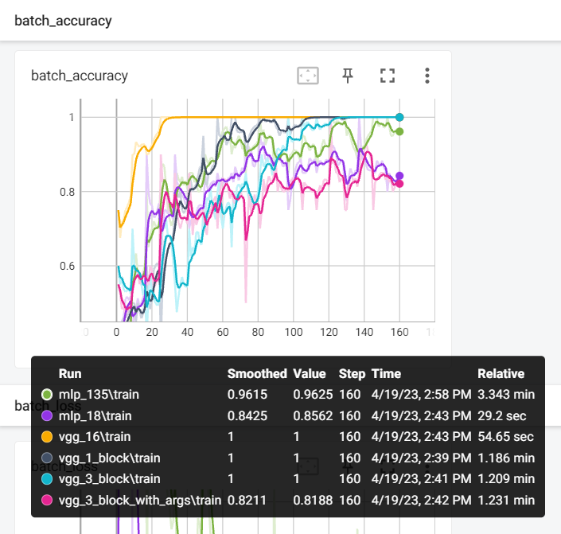
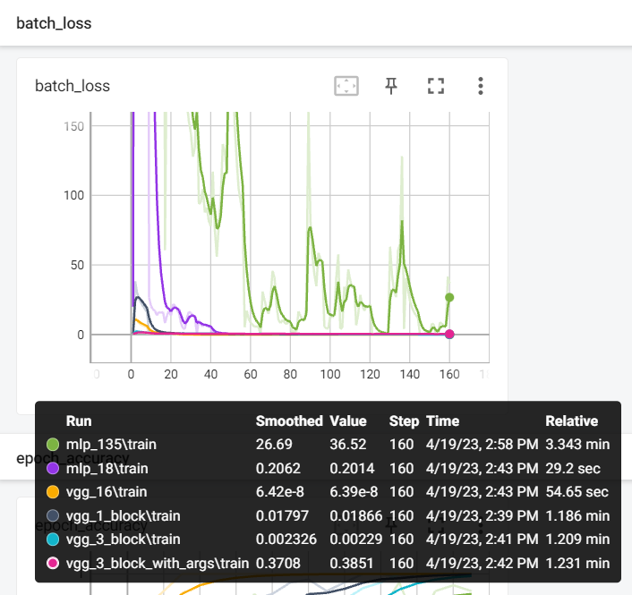
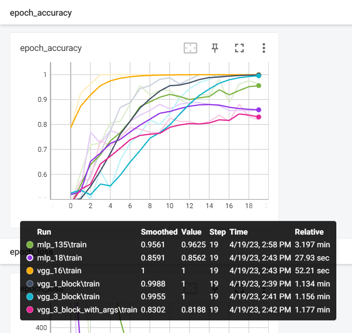
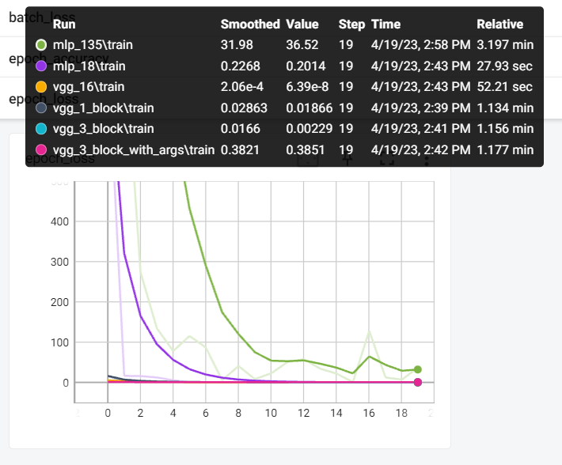
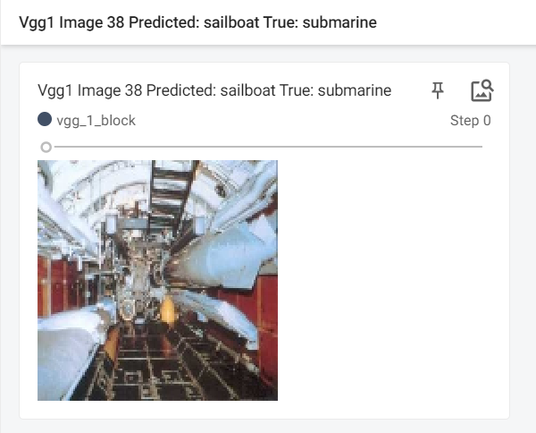

# Importing the required librariesfrom keras.preprocessing.image import ImageDataGeneratorfrom keras.models import Sequentialfrom keras.layers import Conv2D, MaxPooling2D, Flatten, Densefrom keras.callbacks import TensorBoardimport timeimport csvimport osimport tensorflow as tffrom tensorflow import kerasfrom tensorflow.keras import layersimport numpy as npimport matplotlib.pyplot as pltimport shutil
2023-04-19 14:37:07.771981: I tensorflow/tsl/cuda/cudart_stub.cc:28] Could not find cuda drivers on your machine, GPU will not be used.
2023-04-19 14:37:07.807696: I tensorflow/tsl/cuda/cudart_stub.cc:28] Could not find cuda drivers on your machine, GPU will not be used.
2023-04-19 14:37:07.808495: I tensorflow/core/platform/cpu_feature_guard.cc:182] This TensorFlow binary is optimized to use available CPU instructions in performance-critical operations.
To enable the following instructions: AVX2 AVX512F FMA, in other operations, rebuild TensorFlow with the appropriate compiler flags.
2023-04-19 14:37:08.701505: W tensorflow/compiler/tf2tensorrt/utils/py_utils.cc:38] TF-TRT Warning: Could not find TensorRT
Driver Code
print('Are you sure want to override previous report ', end='')command =input()if command =='Yes':print('Overriding previous report')# Open the results file in write mode and adding the headwithopen('results.csv', mode='w', newline='') as results_file: results_writer = csv.writer(results_file) results_writer.writerow(['Model Name', 'Training Time', 'Train Loss', 'Train Acc', 'Test Acc', 'Num Params']) folders_to_remove = ["saved_models", "log_images", "log_stats"]for folder in folders_to_remove:if os.path.exists(folder): shutil.rmtree(folder)print(f"Directory {folder} removed.")else:print(f"Directory {folder} does not exist.")
Are you sure want to override previous report Yes
Overriding previous report
Directory saved_models does not exist.
Directory log_images does not exist.
Directory log_stats does not exist.
# Define directories for training and testing datatrain_dir ='dataset/train/'test_dir ='dataset/test/'# Define the image size to be used for resizing the imagesimg_size = (128, 128)# Define the input image size (including the number of color channels)input_img_size = (128, 128, 3)# Define the batch size for training the modelbatch_size =20# Define the number of epochs for training the modelnum_epochs =20
# Create an ImageDataGenerator object for data augmentation and normalization of training datatrain_datagen = ImageDataGenerator(rescale=1./255)# Create a generator for loading training data from the directorytrain_generator = train_datagen.flow_from_directory(train_dir, target_size=img_size, # Resizes the images to a target size batch_size=batch_size, # Defines the batch size class_mode='binary') # Defines the type of labels to use# Create an ImageDataGenerator object for normalization of testing datatest_datagen = ImageDataGenerator(rescale=1./255)# Create a generator for loading testing data from the directorytest_generator = test_datagen.flow_from_directory(test_dir, target_size=img_size, # Resizes the images to a target size batch_size=batch_size, # Defines the batch size class_mode='binary') # Defines the type of labels to use# Data generators for predictionprediction_datagen = ImageDataGenerator(rescale=1./255)preprocess_input = tf.keras.applications.vgg16.preprocess_inputprediction_datagen_vgg = keras.preprocessing.image.ImageDataGenerator(preprocessing_function=preprocess_input)prediction_generator = test_datagen.flow_from_directory(test_dir, target_size=img_size, batch_size=1, class_mode='binary', shuffle=False) prediction_generator_vgg = prediction_datagen_vgg.flow_from_directory(test_dir, target_size=img_size, batch_size=1, class_mode='binary', shuffle=False)
Found 160 images belonging to 2 classes.
Found 40 images belonging to 2 classes.
Found 40 images belonging to 2 classes.
Found 40 images belonging to 2 classes.
# Function for plotting the predictions and writing to TensorBoarddef plot_predictions(title, model, log_dir, test_generator):# Create a summary writer for TensorBoard writer = tf.summary.create_file_writer(log_dir)# Get the predicted classes for the test set y_pred = model.predict(test_generator) y_pred_classes = tf.round(y_pred).numpy().astype(int).flatten()# Get the true classes for the test set y_true = test_generator.classes.astype(int)# Get the class labels for the dataset class_labels =list(test_generator.class_indices.keys())# Get all the images and their corresponding labels from the test set generator images = [] labels = []for i inrange(len(test_generator)): batch = test_generator[i] images.extend(batch[0]) labels.extend(batch[1].astype(int))for i inrange(len(test_generator)):# Write the image to TensorBoardwith tf.summary.create_file_writer(log_dir).as_default(): tf.summary.image("{} Image {} Predicted: {} True: {}".format(title, i+1, class_labels[y_pred_classes[i]], class_labels[labels[i]]), np.expand_dims(images[i], 0), step=0)
VGG 1 Block
# Define a function that creates a VGG block with one convolutional layerdef vgg_1_block():# Create a Sequential model object with a name model = Sequential(name ='vgg_block_1')# Add a convolutional layer with 64 filters, a 3x3 kernel size, 'relu' activation, and 'same' padding model.add(Conv2D(64, (3, 3), activation='relu', padding='same', input_shape=input_img_size))# Add a max pooling layer with a 2x2 pool size model.add(MaxPooling2D((2, 2)))# Add a flatten layer to convert the 2D feature maps to a 1D feature vector model.add(Flatten())# Add a fully connected layer with 128 units and 'relu' activation model.add(Dense(128, activation='relu'))# Add an output layer with 1 unit and 'sigmoid' activation (for binary classification) model.add(Dense(1, activation='sigmoid'))# Return the modelreturn model# Create a VGG block with one convolutional layermodel1 = vgg_1_block()# Print a summary of the model's architecturemodel1.summary()# Define a log directory for TensorBoardlog_dir ='log_stats/vgg_1_block'# Define the TensorBoard callback with update_freq='batch'tensorboard_callback = tf.keras.callbacks.TensorBoard(log_dir=log_dir, update_freq='batch')
2023-04-19 14:38:27.877910: W tensorflow/core/common_runtime/gpu/gpu_device.cc:1956] Cannot dlopen some GPU libraries. Please make sure the missing libraries mentioned above are installed properly if you would like to use GPU. Follow the guide at https://www.tensorflow.org/install/gpu for how to download and setup the required libraries for your platform.
Skipping registering GPU devices...
# Compile the model with 'adam' optimizer, 'binary_crossentropy' loss function, and 'accuracy' metricmodel1.compile(optimizer='adam', loss='binary_crossentropy', metrics=['accuracy'])# Start timing the trainingstart_time = time.time()# Train the model using the training generator for a specified number of epochs, and save the historyhistory = model1.fit(train_generator, steps_per_epoch=len(train_generator), epochs=num_epochs, callbacks=[tensorboard_callback])# Stop timing the trainingend_time = time.time()# Calculate the training time by subtracting the start time from the end timetraining_time = end_time - start_time# Evaluate the model on the training set and get the training loss and accuracytrain_loss, train_acc = model1.evaluate(train_generator)# Evaluate the model on the test set and get the test loss and accuracytest_loss, test_acc = model1.evaluate(test_generator)# Count the number of parameters in the modelnum_params = model1.count_params()# Open the results file in append mode and writing the resultswithopen('results.csv', mode='a', newline='') as results_file: results_writer = csv.writer(results_file) results_writer.writerow(['VGG 1 Block', training_time, train_loss, train_acc, test_acc, num_params])model1.save('saved_models/vgg_1_block.h5')
2023-04-19 14:38:31.364769: I tensorflow/core/common_runtime/executor.cc:1197] [/device:CPU:0] (DEBUG INFO) Executor start aborting (this does not indicate an error and you can ignore this message): INVALID_ARGUMENT: You must feed a value for placeholder tensor 'Placeholder/_0' with dtype int32
[[{{node Placeholder/_0}}]]
2023-04-19 14:39:43.633980: I tensorflow/core/common_runtime/executor.cc:1197] [/device:CPU:0] (DEBUG INFO) Executor start aborting (this does not indicate an error and you can ignore this message): INVALID_ARGUMENT: You must feed a value for placeholder tensor 'Placeholder/_0' with dtype int32
[[{{node Placeholder/_0}}]]
2023-04-19 14:39:44.234190: I tensorflow/core/common_runtime/executor.cc:1197] [/device:CPU:0] (DEBUG INFO) Executor start aborting (this does not indicate an error and you can ignore this message): INVALID_ARGUMENT: You must feed a value for placeholder tensor 'Placeholder/_0' with dtype int32
[[{{node Placeholder/_0}}]]
2023-04-19 14:39:44.990430: I tensorflow/core/common_runtime/executor.cc:1197] [/device:CPU:0] (DEBUG INFO) Executor start aborting (this does not indicate an error and you can ignore this message): INVALID_ARGUMENT: You must feed a value for placeholder tensor 'Placeholder/_0' with dtype int32
[[{{node Placeholder/_0}}]]
VGG 3 Block
# Define a function to create a VGG block with three convolutional layersdef vgg_3_block():# Create a Sequential model object with the name 'vgg_block_3' model = Sequential(name='vgg_block_3')# Add a convolutional layer with 64 filters, a kernel size of 3x3, 'same' padding, and ReLU activation,# and specify the input shape as the desired image size and 3 color channels model.add(Conv2D(64, (3, 3), activation='relu', padding='same', input_shape=input_img_size))# Add a max pooling layer with a pool size of 2x2 model.add(MaxPooling2D((2, 2)))# Add another convolutional layer with 128 filters and 'same' padding model.add(Conv2D(128, (3, 3), activation='relu', padding='same'))# Add another max pooling layer model.add(MaxPooling2D((2, 2)))# Add a third convolutional layer with 256 filters and 'same' padding model.add(Conv2D(256, (3, 3), activation='relu', padding='same'))# Add a third max pooling layer model.add(MaxPooling2D((2, 2)))# Flatten the output of the convolutional layers model.add(Flatten())# Add a fully connected layer with 128 units and ReLU activation model.add(Dense(128, activation='relu'))# Add a final output layer with a single unit and sigmoid activation (for binary classification) model.add(Dense(1, activation='sigmoid'))# Return the completed model objectreturn model# Create an instance of the VGG block using the vgg_3_block functionmodel2 = vgg_3_block()# Print a summary of the model's architecturemodel2.summary()# Define a log directory for TensorBoardlog_dir ='log_stats/vgg_3_block'# Define the TensorBoard callback with update_freq='batch'tensorboard_callback = tf.keras.callbacks.TensorBoard(log_dir=log_dir, update_freq='batch')
# Compile the model with 'adam' optimizer, 'binary_crossentropy' loss function, and 'accuracy' metricmodel2.compile(optimizer='adam', loss='binary_crossentropy', metrics=['accuracy'])# Start timing the trainingstart_time = time.time()# Train the model using the training generator for a specified number of epochs, and save the historyhistory = model2.fit(train_generator, steps_per_epoch=len(train_generator), epochs=num_epochs, callbacks=[tensorboard_callback])# Stop timing the trainingend_time = time.time()# Calculate the training time by subtracting the start time from the end timetraining_time = end_time - start_time# Evaluate the model on the training set and get the training loss and accuracytrain_loss, train_acc = model2.evaluate(train_generator)# Evaluate the model on the test set and get the test loss and accuracytest_loss, test_acc = model2.evaluate(test_generator)# Count the number of parameters in the modelnum_params = model2.count_params()# Open the results file in append mode and writing the resultswithopen('results.csv', mode='a', newline='') as results_file: results_writer = csv.writer(results_file) results_writer.writerow(['VGG 3 Block', training_time, train_loss, train_acc, test_acc, num_params])model2.save('saved_models/vgg_3_block.h5')
2023-04-19 14:39:46.379523: I tensorflow/core/common_runtime/executor.cc:1197] [/device:CPU:0] (DEBUG INFO) Executor start aborting (this does not indicate an error and you can ignore this message): INVALID_ARGUMENT: You must feed a value for placeholder tensor 'Placeholder/_0' with dtype int32
[[{{node Placeholder/_0}}]]
2023-04-19 14:41:00.131167: I tensorflow/core/common_runtime/executor.cc:1197] [/device:CPU:0] (DEBUG INFO) Executor start aborting (this does not indicate an error and you can ignore this message): INVALID_ARGUMENT: You must feed a value for placeholder tensor 'Placeholder/_0' with dtype int32
[[{{node Placeholder/_0}}]]
2023-04-19 14:41:00.947230: I tensorflow/core/common_runtime/executor.cc:1197] [/device:CPU:0] (DEBUG INFO) Executor start aborting (this does not indicate an error and you can ignore this message): INVALID_ARGUMENT: You must feed a value for placeholder tensor 'Placeholder/_0' with dtype int32
[[{{node Placeholder/_0}}]]
2023-04-19 14:41:01.335855: I tensorflow/core/common_runtime/executor.cc:1197] [/device:CPU:0] (DEBUG INFO) Executor start aborting (this does not indicate an error and you can ignore this message): INVALID_ARGUMENT: You must feed a value for placeholder tensor 'Placeholder/_0' with dtype int32
[[{{node Placeholder/_0}}]]
VGG 3 Block with Data Argumentation
# Define an ImageDataGenerator for data augmentation during trainingtrain_datagen = ImageDataGenerator( rescale=1./255, # rescale pixel values to [0,1] rotation_range=45, # random rotation between 0-45 degrees# width_shift_range=0.2, # random shift horizontally up to 20% of the image width# height_shift_range=0.2, # random shift vertically up to 20% of the image height shear_range=0.2, # random shear up to 20% zoom_range=0.2, # random zoom up to 20%# horizontal_flip=True, # randomly flip images horizontally fill_mode='nearest'# fill any missing pixels with the nearest available pixel)# Create a flow of augmented training data from the training directorytrain_generator = train_datagen.flow_from_directory( train_dir, # path to training data directory target_size=img_size, # size of input images batch_size=batch_size, # number of images per batch class_mode='binary'# type of classification problem (binary or categorical))# Define an ImageDataGenerator for rescaling pixel values in the test settest_datagen = ImageDataGenerator(rescale=1./255)# Create a flow of test data from the test directorytest_generator = test_datagen.flow_from_directory( test_dir, # path to test data directory target_size=img_size, # size of input images batch_size=batch_size, # number of images per batch class_mode='binary'# type of classification problem (binary or categorical))
Found 160 images belonging to 2 classes.
Found 40 images belonging to 2 classes.
# Create an instance of the VGG block using the vgg_3_block functionmodel3 = vgg_3_block()# Print a summary of the model's architecturemodel3.summary()# Define a log directory for TensorBoardlog_dir ='log_stats/vgg_3_block_with_args'# Define the TensorBoard callback with update_freq='batch'tensorboard_callback = tf.keras.callbacks.TensorBoard(log_dir=log_dir, update_freq='batch')
# Compile the model with 'adam' optimizer, 'binary_crossentropy' loss function, and 'accuracy' metricmodel3.compile(optimizer='adam', loss='binary_crossentropy', metrics=['accuracy'])# Start timing the trainingstart_time = time.time()# Train the model using the training generator for a specified number of epochs, and save the historyhistory = model3.fit(train_generator, steps_per_epoch=len(train_generator), epochs=num_epochs, callbacks=[tensorboard_callback])# Stop timing the trainingend_time = time.time()# Calculate the training time by subtracting the start time from the end timetraining_time = end_time - start_time# Evaluate the model on the training set and get the training loss and accuracytrain_loss, train_acc = model3.evaluate(train_generator)# Evaluate the model on the test set and get the test loss and accuracytest_loss, test_acc = model3.evaluate(test_generator)# Count the number of parameters in the modelnum_params = model3.count_params()# Open the results file in append mode and writing the resultswithopen('results.csv', mode='a', newline='') as results_file: results_writer = csv.writer(results_file) results_writer.writerow(['VGG 3 Block with Argumentation', training_time, train_loss, train_acc, test_acc, num_params])model3.save('saved_models/vgg_3_block_with_args.h5')
2023-04-19 14:41:02.555902: I tensorflow/core/common_runtime/executor.cc:1197] [/device:CPU:0] (DEBUG INFO) Executor start aborting (this does not indicate an error and you can ignore this message): INVALID_ARGUMENT: You must feed a value for placeholder tensor 'Placeholder/_0' with dtype int32
[[{{node Placeholder/_0}}]]
2023-04-19 14:42:17.701998: I tensorflow/core/common_runtime/executor.cc:1197] [/device:CPU:0] (DEBUG INFO) Executor start aborting (this does not indicate an error and you can ignore this message): INVALID_ARGUMENT: You must feed a value for placeholder tensor 'Placeholder/_0' with dtype int32
[[{{node Placeholder/_0}}]]
2023-04-19 14:42:18.761244: I tensorflow/core/common_runtime/executor.cc:1197] [/device:CPU:0] (DEBUG INFO) Executor start aborting (this does not indicate an error and you can ignore this message): INVALID_ARGUMENT: You must feed a value for placeholder tensor 'Placeholder/_0' with dtype int32
[[{{node Placeholder/_0}}]]
2023-04-19 14:42:19.125891: I tensorflow/core/common_runtime/executor.cc:1197] [/device:CPU:0] (DEBUG INFO) Executor start aborting (this does not indicate an error and you can ignore this message): INVALID_ARGUMENT: You must feed a value for placeholder tensor 'Placeholder/_0' with dtype int32
[[{{node Placeholder/_0}}]]
VGG 16 Transfer Learning
# Define the preprocessing function for VGG16 modelpreprocess_input = tf.keras.applications.vgg16.preprocess_input# Create a train data generator with the preprocessing functiontrain_datagen = keras.preprocessing.image.ImageDataGenerator(preprocessing_function=preprocess_input)# Define the train generator by reading the images from the train directorytrain_generator = train_datagen.flow_from_directory( train_dir, # path to training data directory target_size=img_size, # size of input images batch_size=batch_size, # number of images per batch class_mode='binary'# type of classification problem (binary or categorical))# Create a test data generator with the same preprocessing function as train generatortest_datagen = keras.preprocessing.image.ImageDataGenerator(preprocessing_function=preprocess_input)# Define the test generator by reading the images from the test directorytest_generator = test_datagen.flow_from_directory( test_dir, # path to test data directory target_size=img_size, # size of input images batch_size=batch_size, # number of images per batch class_mode='binary'# type of classification problem (binary or categorical))
Found 160 images belonging to 2 classes.
Found 40 images belonging to 2 classes.
def vgg_16_transfer_learning():# load model model = tf.keras.applications.vgg16.VGG16(include_top=False, input_shape=input_img_size)# mark loaded layers as not trainablefor layer in model.layers: layer.trainable =False# add new classifier layers flat1 = Flatten()(model.layers[-1].output) class1 = Dense(128, activation='relu', kernel_initializer='he_uniform')(flat1) output = Dense(1, activation='sigmoid')(class1)# define new model model = keras.models.Model(inputs=model.inputs, outputs=output, name='vgg_16')return modelmodel4 = vgg_16_transfer_learning()# Print a summary of the model's architecturemodel4.summary()# Define a log directory for TensorBoardlog_dir ='log_stats/vgg_16'# Define the TensorBoard callback with update_freq='batch'tensorboard_callback = tf.keras.callbacks.TensorBoard(log_dir=log_dir, update_freq='batch')
# Compile the model with 'adam' optimizer, 'binary_crossentropy' loss function, and 'accuracy' metricmodel4.compile(optimizer='adam', loss='binary_crossentropy', metrics=['accuracy'])# Start timing the trainingstart_time = time.time()# Train the model using the training generator for a specified number of epochs, and save the historyhistory = model4.fit(train_generator, steps_per_epoch=len(train_generator), epochs=num_epochs, callbacks=[tensorboard_callback])# Stop timing the trainingend_time = time.time()# Calculate the training time by subtracting the start time from the end timetraining_time = end_time - start_time# Evaluate the model on the training set and get the training loss and accuracytrain_loss, train_acc = model4.evaluate(train_generator)# Evaluate the model on the test set and get the test loss and accuracytest_loss, test_acc = model4.evaluate(test_generator)# Count the number of parameters in the modelnum_params = model4.count_params()# Open the results file in append mode and writing the resultswithopen('results.csv', mode='a', newline='') as results_file: results_writer = csv.writer(results_file) results_writer.writerow(['VGG 16', training_time, train_loss, train_acc, test_acc, num_params])model4.save('saved_models/vgg_16_transfer_learning.h5')
2023-04-19 14:42:20.544130: I tensorflow/core/common_runtime/executor.cc:1197] [/device:CPU:0] (DEBUG INFO) Executor start aborting (this does not indicate an error and you can ignore this message): INVALID_ARGUMENT: You must feed a value for placeholder tensor 'Placeholder/_0' with dtype int32
[[{{node Placeholder/_0}}]]
2023-04-19 14:43:16.201525: I tensorflow/core/common_runtime/executor.cc:1197] [/device:CPU:0] (DEBUG INFO) Executor start aborting (this does not indicate an error and you can ignore this message): INVALID_ARGUMENT: You must feed a value for placeholder tensor 'Placeholder/_0' with dtype int32
[[{{node Placeholder/_0}}]]
2023-04-19 14:43:19.074663: I tensorflow/core/common_runtime/executor.cc:1197] [/device:CPU:0] (DEBUG INFO) Executor start aborting (this does not indicate an error and you can ignore this message): INVALID_ARGUMENT: You must feed a value for placeholder tensor 'Placeholder/_0' with dtype int32
[[{{node Placeholder/_0}}]]
2023-04-19 14:43:19.915752: I tensorflow/core/common_runtime/executor.cc:1197] [/device:CPU:0] (DEBUG INFO) Executor start aborting (this does not indicate an error and you can ignore this message): INVALID_ARGUMENT: You must feed a value for placeholder tensor 'Placeholder/_0' with dtype int32
[[{{node Placeholder/_0}}]]
2023-04-19 14:43:20.693366: I tensorflow/core/common_runtime/executor.cc:1197] [/device:CPU:0] (DEBUG INFO) Executor start aborting (this does not indicate an error and you can ignore this message): INVALID_ARGUMENT: You must feed a value for placeholder tensor 'Placeholder/_0' with dtype int32
[[{{node Placeholder/_0}}]]
MLP with 18 million trainable parameters
# Define the MLP modeldef create_mlp_18(): model = Sequential(name ='MLP') model.add(Flatten(input_shape=input_img_size)) model.add(Dense(256, activation='relu')) model.add(Dense(4096, activation='relu')) model.add(Dense(1024, activation='relu'))# model.add(Dropout(0.2)) model.add(Dense(1, activation='sigmoid'))return modelmodel5 = create_mlp_18()# Print the model summary to see the number of parametersmodel5.summary()# Define a log directory for TensorBoardlog_dir ='log_stats/mlp_18'# Define the TensorBoard callback with update_freq='batch'tensorboard_callback = tf.keras.callbacks.TensorBoard(log_dir=log_dir, update_freq='batch')
# Compile the model with 'adam' optimizer, 'binary_crossentropy' loss function, and 'accuracy' metricmodel5.compile(optimizer='adam', loss='binary_crossentropy', metrics=['accuracy'])# Start timing the trainingstart_time = time.time()# Train the model using the training generator for a specified number of epochs, and save the historyhistory = model5.fit(train_generator, steps_per_epoch=len(train_generator), epochs=num_epochs, callbacks=[tensorboard_callback])# Stop timing the trainingend_time = time.time()# Calculate the training time by subtracting the start time from the end timetraining_time = end_time - start_time# Evaluate the model on the training set and get the training loss and accuracytrain_loss, train_acc = model5.evaluate(train_generator)# Evaluate the model on the test set and get the test loss and accuracytest_loss, test_acc = model5.evaluate(test_generator)# Count the number of parameters in the modelnum_params = model5.count_params()# Open the results file in append mode and writing the resultswithopen('results.csv', mode='a', newline='') as results_file: results_writer = csv.writer(results_file) results_writer.writerow(['MLP18', training_time, train_loss, train_acc, test_acc, num_params])model5.save('saved_models/mlp18.h5')
2023-04-19 14:43:22.001196: I tensorflow/core/common_runtime/executor.cc:1197] [/device:CPU:0] (DEBUG INFO) Executor start aborting (this does not indicate an error and you can ignore this message): INVALID_ARGUMENT: You must feed a value for placeholder tensor 'Placeholder/_0' with dtype int32
[[{{node Placeholder/_0}}]]
2023-04-19 14:43:51.992711: I tensorflow/core/common_runtime/executor.cc:1197] [/device:CPU:0] (DEBUG INFO) Executor start aborting (this does not indicate an error and you can ignore this message): INVALID_ARGUMENT: You must feed a value for placeholder tensor 'Placeholder/_0' with dtype int32
[[{{node Placeholder/_0}}]]
2023-04-19 14:43:52.421763: I tensorflow/core/common_runtime/executor.cc:1197] [/device:CPU:0] (DEBUG INFO) Executor start aborting (this does not indicate an error and you can ignore this message): INVALID_ARGUMENT: You must feed a value for placeholder tensor 'Placeholder/_0' with dtype int32
[[{{node Placeholder/_0}}]]
2023-04-19 14:43:53.022685: I tensorflow/core/common_runtime/executor.cc:1197] [/device:CPU:0] (DEBUG INFO) Executor start aborting (this does not indicate an error and you can ignore this message): INVALID_ARGUMENT: You must feed a value for placeholder tensor 'Placeholder/_0' with dtype int32
[[{{node Placeholder/_0}}]]
MLP with 135 Million Trainable Parameters
# Define the MLP modeldef create_mlp_135(): model = Sequential(name ='MLP') model.add(Flatten(input_shape=input_img_size)) model.add(Dense(2500, activation='relu')) model.add(Dense(2500, activation='relu')) model.add(Dense(2500, activation='relu'))# model.add(Dropout(0.2)) model.add(Dense(1, activation='sigmoid'))return modelmodel6 = create_mlp_135()# Print the model summary to see the number of parametersmodel6.summary()# Define a log directory for TensorBoardlog_dir ='log_stats/mlp_135'# Define the TensorBoard callback with update_freq='batch'tensorboard_callback = tf.keras.callbacks.TensorBoard(log_dir=log_dir, update_freq='batch')
2023-04-19 14:55:06.216229: W tensorflow/tsl/framework/cpu_allocator_impl.cc:83] Allocation of 491520000 exceeds 10% of free system memory.
2023-04-19 14:55:06.543298: W tensorflow/tsl/framework/cpu_allocator_impl.cc:83] Allocation of 491520000 exceeds 10% of free system memory.
2023-04-19 14:55:06.622387: W tensorflow/tsl/framework/cpu_allocator_impl.cc:83] Allocation of 491520000 exceeds 10% of free system memory.
# Compile the model with 'adam' optimizer, 'binary_crossentropy' loss function, and 'accuracy' metricmodel6.compile(optimizer='adam', loss='binary_crossentropy', metrics=['accuracy'])# Start timing the trainingstart_time = time.time()# Train the model using the training generator for a specified number of epochs, and save the historyhistory = model6.fit(train_generator, steps_per_epoch=len(train_generator), epochs=num_epochs, callbacks=[tensorboard_callback])# Stop timing the trainingend_time = time.time()# Calculate the training time by subtracting the start time from the end timetraining_time = end_time - start_time# Evaluate the model on the training set and get the training loss and accuracytrain_loss, train_acc = model6.evaluate(train_generator)# Evaluate the model on the test set and get the test loss and accuracytest_loss, test_acc = model6.evaluate(test_generator)# Count the number of parameters in the modelnum_params = model6.count_params()# Open the results file in append mode and writing the resultswithopen('results.csv', mode='a', newline='') as results_file: results_writer = csv.writer(results_file) results_writer.writerow(['MLP135', training_time, train_loss, train_acc, test_acc, num_params])model5.save('saved_models/mlp135.h5')
2023-04-19 14:55:09.682721: I tensorflow/core/common_runtime/executor.cc:1197] [/device:CPU:0] (DEBUG INFO) Executor start aborting (this does not indicate an error and you can ignore this message): INVALID_ARGUMENT: You must feed a value for placeholder tensor 'Placeholder/_0' with dtype int32
[[{{node Placeholder/_0}}]]
2023-04-19 14:55:09.831306: W tensorflow/tsl/framework/cpu_allocator_impl.cc:83] Allocation of 491520000 exceeds 10% of free system memory.
2023-04-19 14:55:09.874048: W tensorflow/tsl/framework/cpu_allocator_impl.cc:83] Allocation of 491520000 exceeds 10% of free system memory.
2023-04-19 14:58:32.310921: I tensorflow/core/common_runtime/executor.cc:1197] [/device:CPU:0] (DEBUG INFO) Executor start aborting (this does not indicate an error and you can ignore this message): INVALID_ARGUMENT: You must feed a value for placeholder tensor 'Placeholder/_0' with dtype int32
[[{{node Placeholder/_0}}]]
2023-04-19 14:58:32.793472: I tensorflow/core/common_runtime/executor.cc:1197] [/device:CPU:0] (DEBUG INFO) Executor start aborting (this does not indicate an error and you can ignore this message): INVALID_ARGUMENT: You must feed a value for placeholder tensor 'Placeholder/_0' with dtype int32
[[{{node Placeholder/_0}}]]
2023-04-19 14:58:33.204956: I tensorflow/core/common_runtime/executor.cc:1197] [/device:CPU:0] (DEBUG INFO) Executor start aborting (this does not indicate an error and you can ignore this message): INVALID_ARGUMENT: You must feed a value for placeholder tensor 'Placeholder/_0' with dtype int32
[[{{node Placeholder/_0}}]]
Comparisons
import pandas as pddf = pd.read_csv('results.csv', index_col=0)display(df)
Training Time
Train Loss
Train Acc
Test Acc
Num Params
Model Name
VGG 1 Block
72.288201
2.056565e-02
1.00000
0.825
33556481
VGG 3 Block
73.744514
1.194572e-03
1.00000
0.825
8759681
VGG 3 Block with Argumentation
75.150163
3.559158e-01
0.84375
0.750
8759681
VGG 16
55.661988
6.138818e-08
1.00000
0.850
15763521
MLP18
29.990009
1.929377e-01
0.85625
0.675
17832193
MLP135
202.682255
3.953538e+01
0.98125
0.700
135390001
Are the results as expected? Why or why not?
VGG (1 Block)
In VGG (1 block) architecture, max-pooling and fully connected layers are placed after the single block of convolutional layers . Although this architecture has a limited number of parameters and trains quite quickly, it might not be able to recognise complicated aspects in the input.
VGG (3 blocks)
This architecture made up of three blocks of convolutional layers, and each block is followed by fully connected and max-pooling layers. This architecture can capture more complicated aspects in the data because it has more parameters than VGG (1 block). However, because there are more parameters, it takes longer to train than VGG (1 block).
VGG (3 blocks with data argumentation)
By adding different changes to the input images, such as rotation, scaling, and cropping, we inflate the size of the training set. By exposing the model to a larger range of input images when it is used with VGG (3 blocks), data augmentation can increase the model’s capacity to generalise to new data.
VGG 16 Tranfer Learning
When training a new model on a different dataset, transfer learning entails using a previously trained model as a starting point. Two pre-trained models that can be utilised for transfer learning are VGG16 and VGG19. These models have already learned to recognise a range of visual traits after being trained on massive datasets like ImageNet. For us, we used VGG16. We can reduce the amount of time and computational resources required to train a new model on a smaller dataset by starting with these pre-trained models.
Furthermore, when the target dataset is modest, transfer learning using VGG16 outperforms training a model from scratch in terms of performance.
MLP with 135 million parameters
The choice between using a MLP with 135 million parameters versus transfer learning with VGG16 depends on several factors, including the specific task, available resources, and the size of the dataset.
In general, using an MLP with 135 million parameters can potentially achieve higher accuracy compared to transfer learning with VGG16, especially for more complex tasks. However, training such a large MLP from scratch requires a significant amount of computational resources and time, making it impractical for many applications. Additionally, having such a large number of parameters increases the risk of overfitting, which can negatively impact model performance.
On the other hand, transfer learning with VGG16 can be a good choice for image classification tasks, especially if the dataset is small.
MLP with 18 million parameters
In general, an MLP with 135 million parameters is likely to have a higher capacity to model complex relationships within the data compared to an MLP with 18 million parameters. However, having a larger number of parameters does not necessarily guarantee better performance, and can increase the risk of overfitting, especially if the dataset is small.
On the other hand, an MLP with 18 million parameters is likely to require fewer computational resources and training time compared to an MLP with 135 million parameters. This can be beneficial, especially if the available resources are limited.
The number of layers in both MLPs being 3, it’s important to note that the depth of the neural network is also an important factor to consider. Increasing the depth of the network can help to model more complex relationships within the data. However, it can also increase the risk of vanishing or exploding gradients, making it more difficult to train the network.
Model Name
Training Time
Train Loss
Train Acc
Test Acc
Num Params
VGG 1 Block
72.28820062
0.020565649
1
0.824999988
33556481
VGG 3 Block
73.74451399
0.001194572
1
0.824999988
8759681
VGG 3 Block with Argumentation
75.15016341
0.355915844
0.84375
0.75
8759681
VGG 16
55.6619885
6.14E-08
1
0.850000024
15763521
MLP18
29.99000883
0.192937687
0.856249988
0.675000012
17832193




Does data augmentation help? Why or why not?
Data augmentation is a method of creating additional training data from the existing datase by using various transformations including rotation, scaling, flipping, cropping, and other picture modificationst.
By doing this, the model is exposed to a wider variety of training data and can improve its ability to identify and generalise to fresh, unexplored data.
Data augmentation can reduce overfitting, which occurs when the model memorises the training data rather than generalising to new data, by expanding the quantity and diversity of the training dataset. This may enable the model to perform more effectively on the test data.
In other words, data augmentation makes the model more reliable and capable of identifying objects or patterns.
For us, the argumented model is working worse than the original one. One reason could be, less number of epochs to train with, perhaps may with with higher epoch, we will get better results.
Does it matter how many epochs you fine tune the model? Why or why not?
The term “number of epochs” refers to how many times the complete dataset was run through the model during training while fine-tuning a pre-trained model.
If the number of epoch is low, the model will underfit.
On the other side, if the number of epochs is too high , then model might begin to overfit to the training data, which would mean that it would memorise the training data rather than generalising to new data.
It is crucial to select the right number of epochs for fine-tuning in accordance with the difficulty of the task, the size of the dataset, and the unique properties of the model and data. Normally, this value is calculated by keeping track of the model’s performance on a validation set during training and halting when the validation accuracy stops increasing or begins to drop.
Even though we have not implemented it, but early stopping could be a good measure to utilize, when it comes to number of epochs.
Early stopping is a callback technique that can help prevent overfitting and save computational resources by stopping the training process before it completes all epochs. It can improve model performance, reduce training time, and help generalize the model better to unseen data.
Are there any particular images that the model is confused about? Why or why not?

This was the image for which each model got confused.